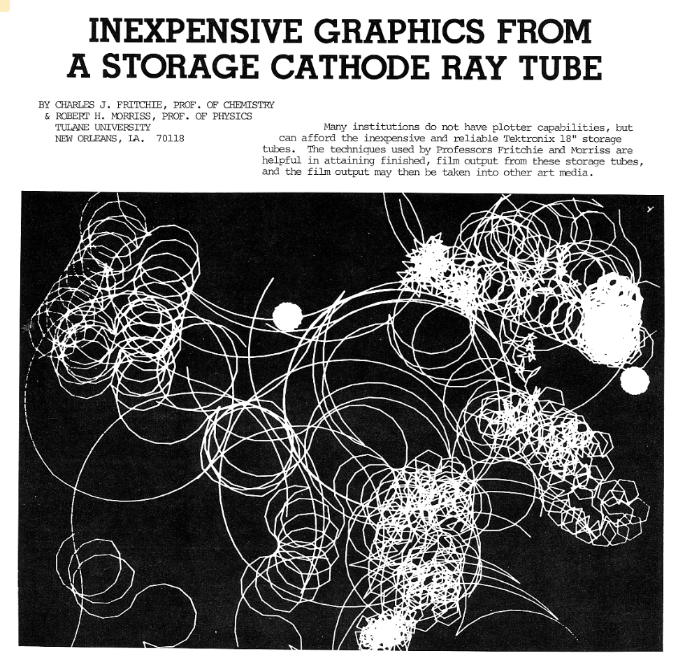
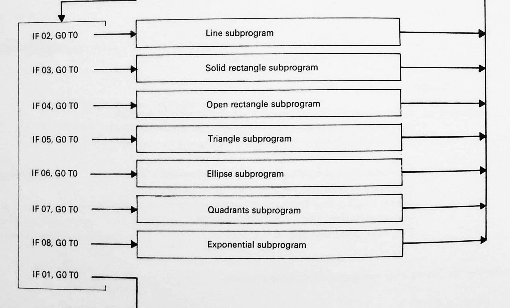
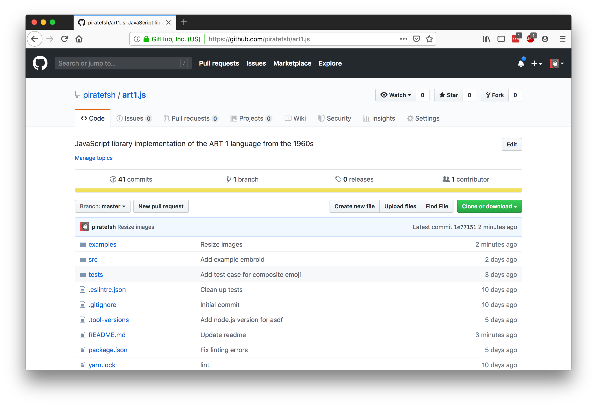

recreating forgotten programming languages,
for art!
by Sher Minn Chong / @piratefsh / Strangeloop 2019

Sher Minn
Malaysian ❤️🇲🇾
Recurse Center
programmer's retreat in New York City

I 💖 programming + art
Retro computer art

Edited by Grace C. Hertlein
 [source: recodeproject.com]No code published
-> Can we reverse engineer it?
🤔🤔🤔
Computer art
💻🎨
Any art in which computers play a role in production or display of the artwork
Today we are focusing on the birth of computer art
1950s to 1970s
Computers back then
📼📺🗃
context matters
IBM 7090
Data Processing System

introduced in 1959 at the price of USD 3 million
"...I would go to the computer center and look at the information and then type it out, resulting in the punched cards.
I'd give it to the little man behind the door, and five minutes later, I'd get this drawing back...
- Frederick Hammersley interviewed by Lawrence Weschler
Mainly used for scientific & mathematical applications
Coined term 'computer graphics'
🖼

Animation of human limbs to determine possible movements in cockpit for easier instrumentation reach
Source: The Computer in Art by Jasia Reichdart, 1971
Seattle-Tacoma airport graphic used for animation of landing simulations
Source: The Computer in Art by Jasia Reichdart, 1971
One of the First Computer-Generated Films
Simulation of a Two-Gyro Gravity Gradient Attitude Control System by E. E. Zajac, 1963 [source]
Art happened anyway
🙌
How do tools and languages influence the work?
Unsuspecting methods
📸🌀📺
Cathode-ray oscilloscopes

Ben F. Laposky [source: Wikipedia]


Various Oscillons by Ben Laposky [source: Recreational Mathematics magazine, August 1961]

Oscillons by Ben Laposky [source: Recreational Mathematics magazine, August 1961]
Herbert W. Franke [source: spalterdigital.com]

top: Elektronische by Herbert Franke, 1961
[source: zi.biologie.uni-muenchen.de]

Electronic Graphics by Herbert Franke, 1960s
[source: Computer Art Computer Graphics]

Oscillons #39 and #11 by Ben Laposky
[source: Recreational Mathematics magazine, August 1961]

The building blocks of Laposky's Electronic Abstractions
[source: Recreational Mathematics magazine, August 1961]

Electronic Graphics by Herbert Franke, 1960s
[source: Recreational Mathematics magazine, August 1961]
A language for artists
🖨✨🔡

IBM 1403 line printer.
Source: The Computer in Art by Jasia Reichdart, 1971


Equal Tea Talk by Frederick Hammersley, 1969 [source]

Undernourished by Frederick Hammersley, 1969 [source]
ART 1 Programming language
by Katherine Nash and Richard H. Williams at University of New Mexico
"...to teach students to make simple computer graphics"
"...notable for its simplicity and intended primarily as an introduction to the use of computers for those without any technological background"
source: The Computer in Art by Jasia Reichdart, 1971
ART I

p5.js


Jelly Centers by Frederick Hammersley, 1969 [source]

Jelly Centers Detail, 1969 [source]
art created by making the most of available technology
ASCII art ?
not quite, more like EBCDIC art
(Extended Binary Coded Decimal Interchange Code)
Punched card with the EBCDIC character set.[source]
What was it like working with the language?
ART 1 had literally seven drawing subroutines
✨🌈art1.js🌀✨


Unicode diacritcal marks to achieve detail
[source: Wikipedia]
✨ ASCII Unicode art 👍
lines
... how do you even draw them?
Bresenham's Line Drawing Algorithm
originally implemented by Jack Elton Bresenham in 1962 at IBM
[source: https://xlinux.nist.gov]
handling the other 7 octants

implementation
circles
...are a lot easier to draw
implementation
ART 2
One challenge in the use of ART1 has been the technique of rendering shaded values.source: Statistical Shading Using Digital Computer Program ART2, Richard H. Williams 1971